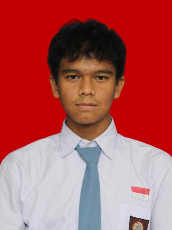

Gavin Andrian Wirasana

Siswa / Pelajar
Umur & Tanggal Lahir
17 Tahun (2 Mei 2009)
Alamat
Graha Bojongsari 1
Saya adalah seorang pelajar berusia 17 tahun yang aktif, adaptif, dan memiliki minat besar dalam bidang sains, seni, serta olahraga. Memilki semangat belajar yang tinggi, mampu berkomunikasi dengan baik, serta dapat bekerja secara efektif baik mandiri maupun dalam tim.
Aktif berpartisipasi dalam penelitian ilmiah sederhana, pembuatan laporan, eksperimen, serta melatih kemampuan berpikir kritis dan analisis data secara sistematik.